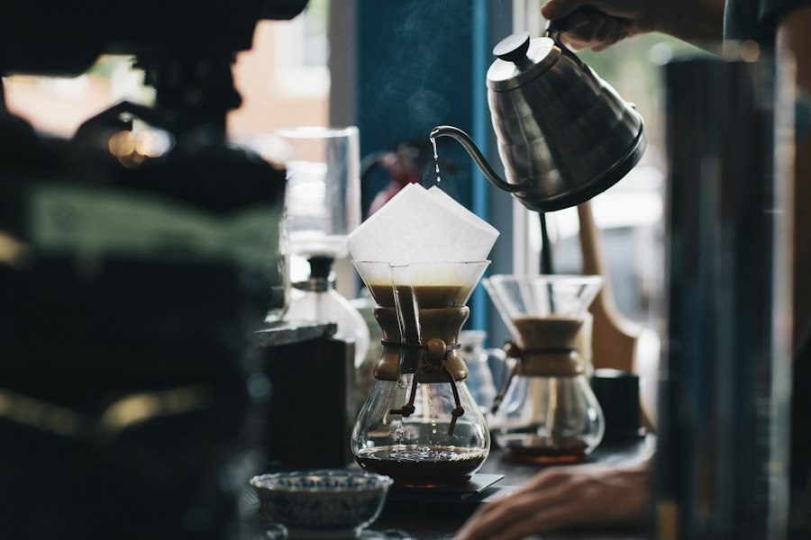
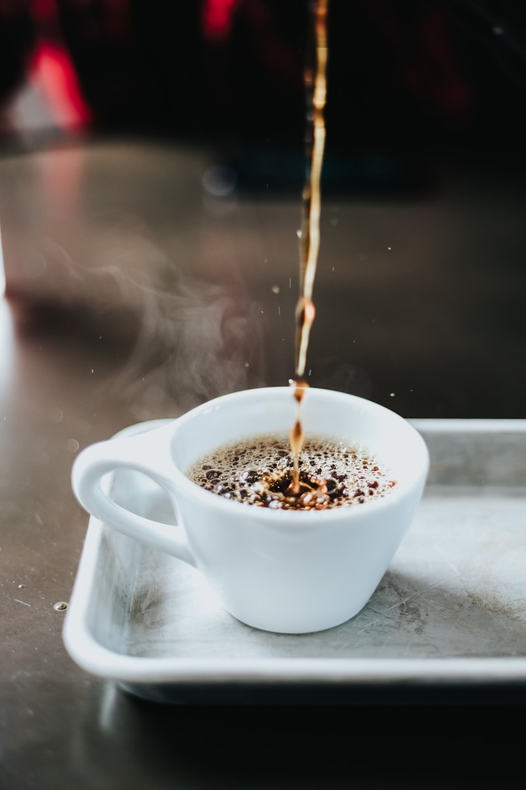
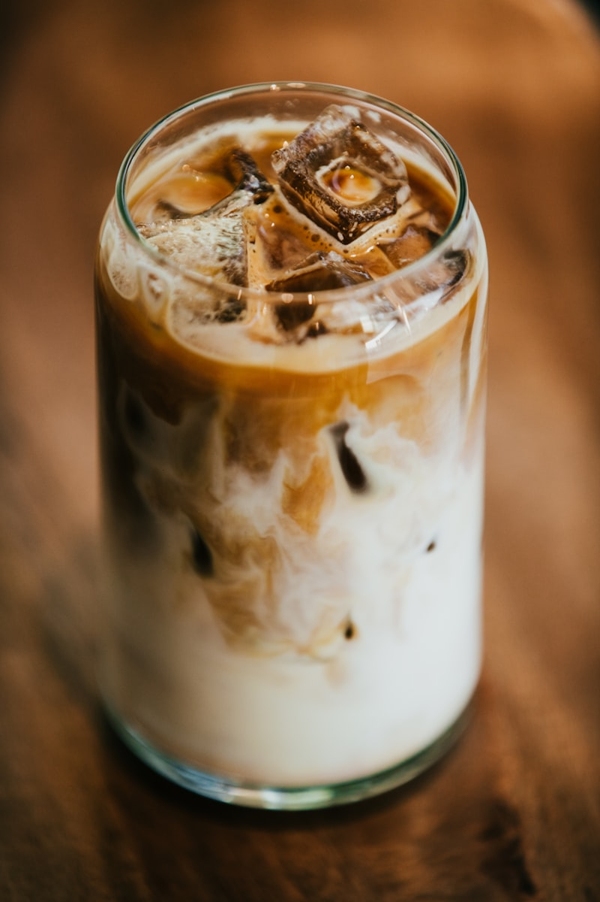

Biji Kopi Lokal Indonesia
Biji kopi single-origin Gayo, Toraja, Kintamani, dan Flores, disangrai segar setiap minggu.
Dari dataran tinggi Gayo hingga pesisir Flores — rasakan nusantara, cangkir demi cangkir.
Jelajahi Menu Kami
Kedai Kopi Nusantara adalah kedai kopi lingkungan yang nyaman dan merayakan kekayaan keragaman biji kopi Indonesia. Kami mendapatkan pasokan langsung dari petani kecil di Gayo, Toraja, Kintamani, dan Flores.
Setiap cangkir diseduh dengan penuh perhatian — baik Anda menyukai espresso yang kuat, latte yang lembut, maupun cold brew yang menyegarkan. Datang untuk kopinya, tinggal untuk kehangatannya.
Cerita KamiEmpat alasan sederhana mengapa pelanggan setia kami kembali setiap pagi.
Biji kopi single-origin Gayo, Toraja, Kintamani, dan Flores, disangrai segar setiap minggu.
Interior kayu yang hangat, pencahayaan lembut, dan aroma seduhan segar.
Bekerja atau belajar dengan nyaman dengan internet berkecepatan tinggi dan banyak colokan listrik.
Kopi berkualitas kafe mulai dari Rp 22.000 — ramah di kantong.
Intipan seduhan paling digemari dari seluruh nusantara.

Espresso Aceh yang kuat dan kaya dengan crema keemasan yang tebal.
Rp 25.000
Arabika Bajawa yang lembut dipadukan dengan susu steamed yang creamy.
Rp 28.000
Cold brew Bali yang cerah diseduh selama 18 jam, disajikan dengan es.
Rp 30.000